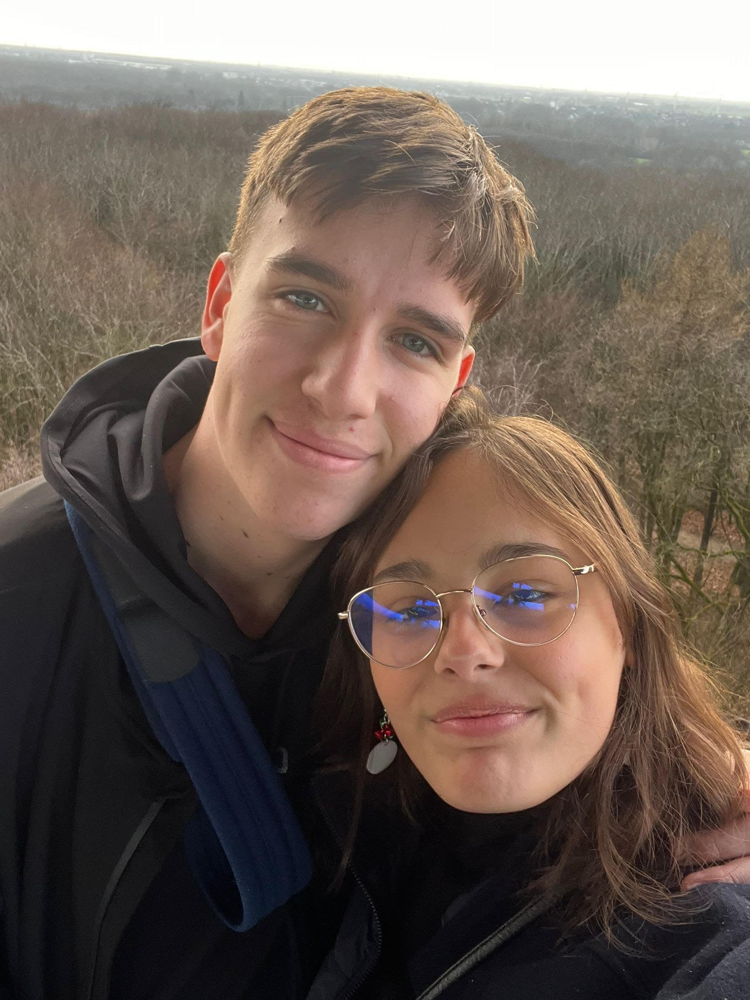

OVER MIJ
Mijn naam is Mathijs Ulenberg, ik ben geboren op 23 januari 2008 in Spijkenisse, Zuid-Holland.
Op dit moment studeer ik HBO-ICT op de Haagse Hogeschool,
ik zit nu in het tweede jaar.
Voor het vak WPFW ben ik deze portfolio website aan het maken,
hier ga ik mijn portfolio natuurlijk bijhouden en mijn blog bijhouden.